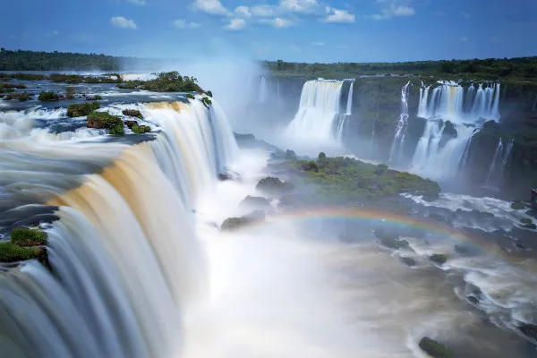
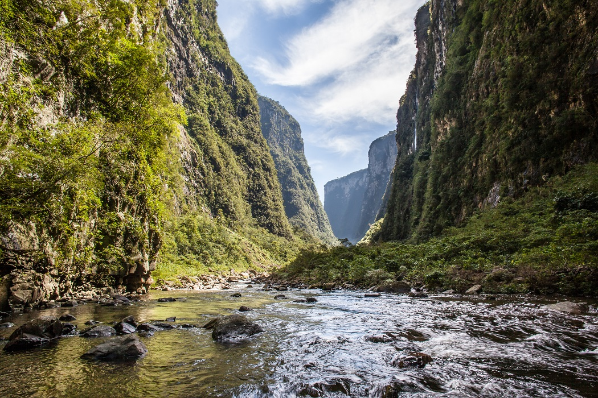
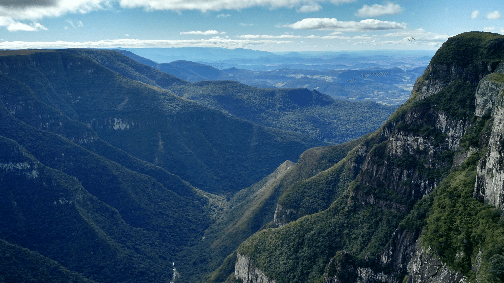

Sul
A Região Sul do Brasil encanta com suas paisagens de serra, planaltos imponentes e uma exuberância natural que contrasta com o calor tropical. De grandiosos cânions a florestas de araucárias e as quedas d'água mais espetaculares do continente, o Sul oferece um cenário diversificado. É um destino que combina a beleza da natureza com um toque europeu, convidando à aventura, à contemplação e à cultura.
Cataratas do Iguaçu
Consideradas uma das Sete Novas Maravilhas da Natureza, as Cataratas do Iguaçu são um espetáculo grandioso de força e beleza. Localizadas na fronteira entre Brasil e Argentina, suas mais de 275 quedas d'água formam uma cortina colossal de água e névoa. A visão panorâmica dos mirantes brasileiros é de tirar o fôlego, com o som estrondoso das águas e a presença constante de arco-íris, um verdadeiro poder da natureza.


Parque Nacional dos Aparados da Serra
O Parque Nacional dos Aparados da Serra, na divisa entre Rio Grande do Sul e Santa Catarina, é o lar de alguns dos maiores e mais impressionantes cânions do Brasil. Com paredões verticais que chegam a 700 metros de altura e se estendem por quilômetros, cânions como o Itaimbezinho e o Fortaleza revelam paisagens de tirar o fôlego. Trilhas e mirantes oferecem vistas espetaculares, onde a imensidão da natureza se mostra em sua forma mais dramática.


Serra Gaúcha
A Serra Gaúcha, no Rio Grande do Sul, é uma região de colinas suaves, vales verdejantes e uma atmosfera charmosa que lembra a Europa. Conhecida por suas vinícolas, clima ameno e arquitetura peculiar, a paisagem é adornada por densas florestas de araucárias e campos que mudam de cor com as estações. Um convite ao roteiro romântico, à degustação de vinhos e ao contato com uma natureza exuberante e acolhedora.

